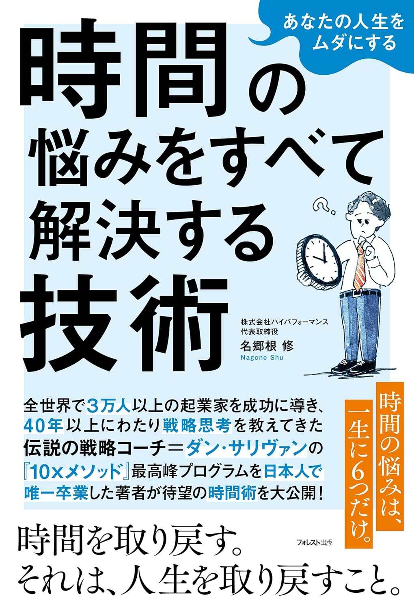

今回の対談者をご紹介します
メイン講師
睡眠コーチ × パフォーマンス最適化 × コンディション管理

角谷リョウ
Sumiya Ryo
睡眠コーチ / 株式会社LIFREE 共同創業者 / 睡眠・超回復研究所 所長
- 160社・累計16万人以上のビジネスパーソンを変革
- 4週間プログラムで90%以上が「正常範囲」に改善
- 上級睡眠健康指導士 / 日本スポーツ協会公認スポーツ指導者
- 著書多数（フォレスト出版・Gakken・PHP研究所ほか）
都市工学を専攻後、神戸市役所に入局。退職後トレーナーとして独立し、認知行動療法や心理学をベースにした独自の睡眠改善メソッドにより、1回のセミナー参加で不眠症レベルの受講者の約60%が正常範囲まで改善。
著書
仕事の質を高める休養力
フォレスト出版
 ゲスト講師
ゲスト講師
戦略コーチング × 10x時間術 × 経営者パフォーマンス
名郷根 修
Nagone Shu
株式会社ハイパフォーマンス代表取締役 / Rotterdam School of Management MBA / MIT Sloan Executive MBA
- グループ合計年商180億円の医療分野の会社を経営
- 「伝説の戦略コーチ」ダン・サリヴァン氏に師事
- 「10x Ambition Program」を卒業した唯一の日本人
- 事業を10倍にしながら自由な時間を生み出す時間術の実践者
米国戦略コンサルティングファーム、グローバル医療機器メーカーで勤務後、現在はグループ合計年商180億円の医療分野の会社の経営に携わる。「同じ時間で10倍の成果を出す仕組み」の実践者であり、会社経営者やエグゼクティブ、起業家を対象にコーチングプログラムを提供している。

著書
あなたの人生をムダにする
時間の悩みをすべて解決する技術
フォレスト出版